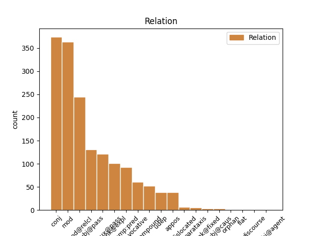
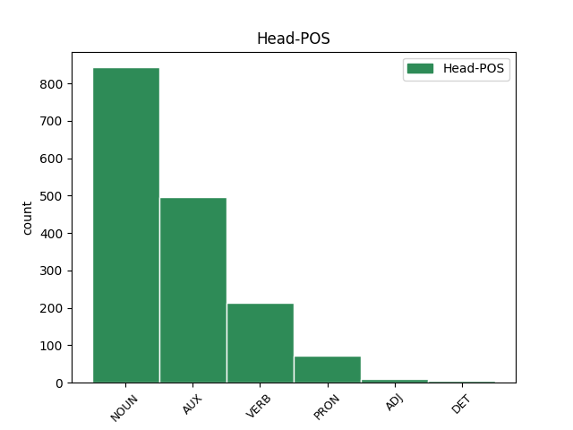
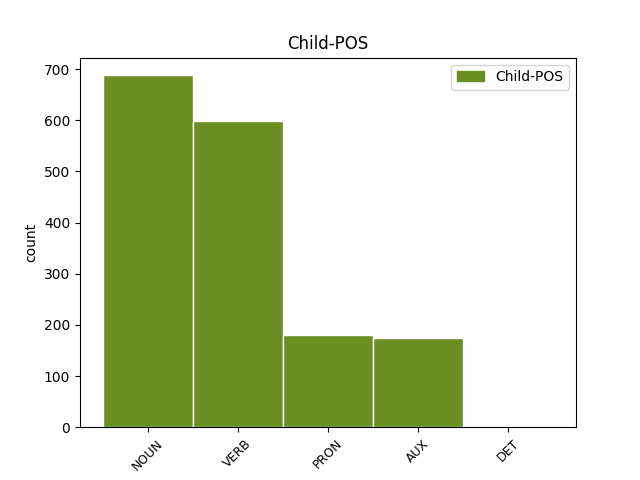

Distribution of features within this leaf



Agreement Rules sorted by frequency.
- When the dependent token is the modifer(mod) of the head token, and the dependent token is VERB.
1 Rolf _ _ _ _ 0 _ _ _
2 Bolin _ _ _ _ 0 _ _ _
3 , _ _ _ _ 0 _ _ _
4 qui _ _ _ _ 0 _ _ _
5 était _ _ _ _ 0 _ _ _
6 professeur _ _ _ _ 0 _ _ _
7 à _ _ _ _ 0 _ _ _
8 la _ _ _ _ 0 _ _ _
9 station _ _ _ _ 0 _ _ _
10 marine _ _ _ _ 0 _ _ _
11 de _ _ _ _ 0 _ _ _
12 Hopkin _ _ _ _ 0 _ _ _
13 où _ _ _ _ 0 _ _ _
14 je _ _ _ _ 0 _ _ _
15 travaille _ _ _ _ 0 _ _ _
16 , _ _ _ _ 0 _ _ _
17 a _ _ _ _ 0 _ _ _
18 écrit _ _ _ _ 0 _ _ _
19 dans _ _ _ _ 0 _ _ _
20 les _ _ _ _ 0 _ _ _
21 années _ _ _ _ 0 _ _ _
22 40 _ _ _ _ 0 _ _ _
23 que _ _ _ _ 0 _ _ _
24 , _ _ _ _ 0 _ _ _
25 " _ _ _ _ 0 _ _ _
26 les _ _ _ _ 0 _ _ _
27 gaz _ _ _ _ 0 _ _ _
28 émanant _ _ _ _ 0 _ _ _
29 de _ _ _ _ 0 _ _ _
30 la _ _ _ _ 0 _ _ _
31 crasse crasse NOUN S Gender=Fem|Number=Sing 0 _ _ _
32 flottante flotter VERB V Number=Sing|Tense=Pres|VerbForm=Part 31 mod _ _
33 dans _ _ _ _ 0 _ _ _
34 les _ _ _ _ 0 _ _ _
35 anses _ _ _ _ 0 _ _ _
36 de _ _ _ _ 0 _ _ _
37 le _ _ _ _ 0 _ _ _
38 golfe _ _ _ _ 0 _ _ _
39 étaient _ _ _ _ 0 _ _ _
40 si _ _ _ _ 0 _ _ _
41 mauvais _ _ _ _ 0 _ _ _
42 qu' _ _ _ _ 0 _ _ _
43 ils _ _ _ _ 0 _ _ _
44 faisaient _ _ _ _ 0 _ _ _
45 même _ _ _ _ 0 _ _ _
46 noircir _ _ _ _ 0 _ _ _
47 les _ _ _ _ 0 _ _ _
48 peintures _ _ _ _ 0 _ _ _
49 à _ _ _ _ 0 _ _ _
50 le _ _ _ _ 0 _ _ _
51 plomb _ _ _ _ 0 _ _ _
52 " _ _ _ _ 0 _ _ _
53 . _ _ _ _ 0 _ _ _
1 Alors _ _ _ _ 0 _ _ _
2 , _ _ _ _ 0 _ _ _
3 un _ _ _ _ 0 _ _ _
4 dauphin dauphin NOUN S Gender=Masc|Number=Sing 0 _ _ _
5 , _ _ _ _ 0 _ _ _
6 maman maman NOUN S Gender=Fem|Number=Sing 4 conj _ _
7 dauphin _ _ _ _ 0 _ _ _
8 , _ _ _ _ 0 _ _ _
9 n' _ _ _ _ 0 _ _ _
10 importe _ _ _ _ 0 _ _ _
11 quel _ _ _ _ 0 _ _ _
12 dauphin _ _ _ _ 0 _ _ _
13 - _ _ _ _ 0 _ _ _
14 il _ _ _ _ 0 _ _ _
15 n' _ _ _ _ 0 _ _ _
16 y _ _ _ _ 0 _ _ _
17 a _ _ _ _ 0 _ _ _
18 qu' _ _ _ _ 0 _ _ _
19 une _ _ _ _ 0 _ _ _
20 façon _ _ _ _ 0 _ _ _
21 pour _ _ _ _ 0 _ _ _
22 que _ _ _ _ 0 _ _ _
23 le _ _ _ _ 0 _ _ _
24 PCB _ _ _ _ 0 _ _ _
25 sortent _ _ _ _ 0 _ _ _
26 de _ _ _ _ 0 _ _ _
27 le _ _ _ _ 0 _ _ _
28 dauphin _ _ _ _ 0 _ _ _
29 . _ _ _ _ 0 _ _ _
1 Ma _ _ _ _ 0 _ _ _
2 c' _ _ _ _ 0 _ _ _
3 est _ _ _ _ 0 _ _ _
4 aussi _ _ _ _ 0 _ _ _
5 une _ _ _ _ 0 _ _ _
6 tragédie _ _ _ _ 0 _ _ _
7 pour _ _ _ _ 0 _ _ _
8 les _ _ _ _ 0 _ _ _
9 gens gens NOUN S Number=Plur 0 _ _ _
10 qui _ _ _ _ 0 _ _ _
11 les _ _ _ _ 0 _ _ _
12 mangent manger VERB V Mood=Ind|Number=Plur|Person=3|Tense=Pres|VerbForm=Fin 9 mod@relcl _ _
13 parce _ _ _ _ 0 _ _ _
14 qu' _ _ _ _ 0 _ _ _
15 ils _ _ _ _ 0 _ _ _
16 ne _ _ _ _ 0 _ _ _
17 savent _ _ _ _ 0 _ _ _
18 pas _ _ _ _ 0 _ _ _
19 que _ _ _ _ 0 _ _ _
20 c' _ _ _ _ 0 _ _ _
21 est _ _ _ _ 0 _ _ _
22 de _ _ _ _ 0 _ _ _
23 la _ _ _ _ 0 _ _ _
24 viande _ _ _ _ 0 _ _ _
25 toxique _ _ _ _ 0 _ _ _
26 . _ _ _ _ 0 _ _ _
1 Il il PRON PE Gender=Masc|Number=Sing|Person=3|PronType=Prs 3 unk@expl _ _
2 s' _ _ _ _ 0 _ _ _
3 avère avèrer VERB V Mood=Ind|Number=Sing|Person=3|Tense=Pres|VerbForm=Fin 0 _ _ _
4 que _ _ _ _ 0 _ _ _
5 beaucoup _ _ _ _ 0 _ _ _
6 de _ _ _ _ 0 _ _ _
7 dauphins _ _ _ _ 0 _ _ _
8 sont _ _ _ _ 0 _ _ _
9 vendus _ _ _ _ 0 _ _ _
10 comme _ _ _ _ 0 _ _ _
11 viande _ _ _ _ 0 _ _ _
12 dans _ _ _ _ 0 _ _ _
13 le _ _ _ _ 0 _ _ _
14 marché _ _ _ _ 0 _ _ _
15 de _ _ _ _ 0 _ _ _
16 la _ _ _ _ 0 _ _ _
17 baleine _ _ _ _ 0 _ _ _
18 partout _ _ _ _ 0 _ _ _
19 dans _ _ _ _ 0 _ _ _
20 le _ _ _ _ 0 _ _ _
21 monde _ _ _ _ 0 _ _ _
22 . _ _ _ _ 0 _ _ _
1 Il _ _ _ _ 0 _ _ _
2 s' _ _ _ _ 0 _ _ _
3 avère _ _ _ _ 0 _ _ _
4 que _ _ _ _ 0 _ _ _
5 beaucoup _ _ _ _ 0 _ _ _
6 de _ _ _ _ 0 _ _ _
7 dauphins _ _ _ _ 0 _ _ _
8 sont être AUX VA Mood=Ind|Number=Plur|Person=3|Tense=Pres|VerbForm=Fin 0 _ _ _
9 vendus vendre VERB V Gender=Masc|Number=Plur|Tense=Past|VerbForm=Part 8 comp:aux@pass _ _
10 comme _ _ _ _ 0 _ _ _
11 viande _ _ _ _ 0 _ _ _
12 dans _ _ _ _ 0 _ _ _
13 le _ _ _ _ 0 _ _ _
14 marché _ _ _ _ 0 _ _ _
15 de _ _ _ _ 0 _ _ _
16 la _ _ _ _ 0 _ _ _
17 baleine _ _ _ _ 0 _ _ _
18 partout _ _ _ _ 0 _ _ _
19 dans _ _ _ _ 0 _ _ _
20 le _ _ _ _ 0 _ _ _
21 monde _ _ _ _ 0 _ _ _
22 . _ _ _ _ 0 _ _ _
1 En _ _ _ _ 0 _ _ _
2 fait _ _ _ _ 0 _ _ _
3 , _ _ _ _ 0 _ _ _
4 ce ce PRON PD Number=Sing|Person=3|PronType=Dem 0 _ _ _
5 qu' _ _ _ _ 0 _ _ _
6 on _ _ _ _ 0 _ _ _
7 a avoir AUX VA Mood=Ind|Number=Sing|Person=3|Tense=Pres|VerbForm=Fin 4 mod@relcl _ _
8 fait _ _ _ _ 0 _ _ _
9 il _ _ _ _ 0 _ _ _
10 y _ _ _ _ 0 _ _ _
11 a _ _ _ _ 0 _ _ _
12 quelques _ _ _ _ 0 _ _ _
13 années _ _ _ _ 0 _ _ _
14 c' _ _ _ _ 0 _ _ _
15 était _ _ _ _ 0 _ _ _
16 d' _ _ _ _ 0 _ _ _
17 apprendre _ _ _ _ 0 _ _ _
18 comment _ _ _ _ 0 _ _ _
19 on _ _ _ _ 0 _ _ _
20 introduit _ _ _ _ 0 _ _ _
21 clandestinement _ _ _ _ 0 _ _ _
22 un _ _ _ _ 0 _ _ _
23 labo _ _ _ _ 0 _ _ _
24 de _ _ _ _ 0 _ _ _
25 biologie _ _ _ _ 0 _ _ _
26 moléculaire _ _ _ _ 0 _ _ _
27 à _ _ _ _ 0 _ _ _
28 Tokyo _ _ _ _ 0 _ _ _
29 et _ _ _ _ 0 _ _ _
30 de _ _ _ _ 0 _ _ _
31 l' _ _ _ _ 0 _ _ _
32 utiliser _ _ _ _ 0 _ _ _
33 pour _ _ _ _ 0 _ _ _
34 tester _ _ _ _ 0 _ _ _
35 génétiquement _ _ _ _ 0 _ _ _
36 l' _ _ _ _ 0 _ _ _
37 ADN _ _ _ _ 0 _ _ _
38 d' _ _ _ _ 0 _ _ _
39 échantillons _ _ _ _ 0 _ _ _
40 de _ _ _ _ 0 _ _ _
41 viande _ _ _ _ 0 _ _ _
42 de _ _ _ _ 0 _ _ _
43 baleine _ _ _ _ 0 _ _ _
44 et _ _ _ _ 0 _ _ _
45 identifier _ _ _ _ 0 _ _ _
46 ce _ _ _ _ 0 _ _ _
47 qu' _ _ _ _ 0 _ _ _
48 ils _ _ _ _ 0 _ _ _
49 étaient _ _ _ _ 0 _ _ _
50 vraiment _ _ _ _ 0 _ _ _
51 . _ _ _ _ 0 _ _ _
1 Aucune _ _ _ _ 0 _ _ _
2 disposition disposition NOUN S Gender=Fem|Number=Sing 8 subj@pass _ _
3 de _ _ _ _ 0 _ _ _
4 la _ _ _ _ 0 _ _ _
5 présente _ _ _ _ 0 _ _ _
6 déclaration _ _ _ _ 0 _ _ _
7 ne _ _ _ _ 0 _ _ _
8 peut pouvoir AUX VM Mood=Ind|Number=Sing|Person=3|Tense=Pres|VerbForm=Fin 0 _ _ _
9 être _ _ _ _ 0 _ _ _
10 interprétée _ _ _ _ 0 _ _ _
11 comme _ _ _ _ 0 _ _ _
12 impliquant _ _ _ _ 0 _ _ _
13 pour _ _ _ _ 0 _ _ _
14 un _ _ _ _ 0 _ _ _
15 Etat _ _ _ _ 0 _ _ _
16 , _ _ _ _ 0 _ _ _
17 un _ _ _ _ 0 _ _ _
18 groupement _ _ _ _ 0 _ _ _
19 ou _ _ _ _ 0 _ _ _
20 un _ _ _ _ 0 _ _ _
21 individu _ _ _ _ 0 _ _ _
22 un _ _ _ _ 0 _ _ _
23 droit _ _ _ _ 0 _ _ _
24 quelconque _ _ _ _ 0 _ _ _
25 de _ _ _ _ 0 _ _ _
26 se _ _ _ _ 0 _ _ _
27 livrer _ _ _ _ 0 _ _ _
28 à _ _ _ _ 0 _ _ _
29 une _ _ _ _ 0 _ _ _
30 activité _ _ _ _ 0 _ _ _
31 ou _ _ _ _ 0 _ _ _
32 d' _ _ _ _ 0 _ _ _
33 accomplir _ _ _ _ 0 _ _ _
34 un _ _ _ _ 0 _ _ _
35 acte _ _ _ _ 0 _ _ _
36 visant _ _ _ _ 0 _ _ _
37 à _ _ _ _ 0 _ _ _
38 la _ _ _ _ 0 _ _ _
39 destruction _ _ _ _ 0 _ _ _
40 de _ _ _ _ 0 _ _ _
41 les _ _ _ _ 0 _ _ _
42 droits _ _ _ _ 0 _ _ _
43 et _ _ _ _ 0 _ _ _
44 libertés _ _ _ _ 0 _ _ _
45 qui _ _ _ _ 0 _ _ _
46 y _ _ _ _ 0 _ _ _
47 sont _ _ _ _ 0 _ _ _
48 énoncés _ _ _ _ 0 _ _ _
49 . _ _ _ _ 0 _ _ _
1 Elle _ _ _ _ 0 _ _ _
2 contenait _ _ _ _ 0 _ _ _
3 200 _ _ _ _ 0 _ _ _
4 à _ _ _ _ 0 _ _ _
5 300 _ _ _ _ 0 _ _ _
6 à _ _ _ _ 0 _ _ _
7 400 _ _ _ _ 0 _ _ _
8 fois foi NOUN S Gender=Fem|Number=Plur 11 mod _ _
9 plus _ _ _ _ 0 _ _ _
10 de _ _ _ _ 0 _ _ _
11 produits produit NOUN S Gender=Masc|Number=Plur 0 _ _ _
12 toxiques _ _ _ _ 0 _ _ _
13 que _ _ _ _ 0 _ _ _
14 les _ _ _ _ 0 _ _ _
15 taux _ _ _ _ 0 _ _ _
16 autorisés _ _ _ _ 0 _ _ _
17 par _ _ _ _ 0 _ _ _
18 la _ _ _ _ 0 _ _ _
19 EPA _ _ _ _ 0 _ _ _
20 . _ _ _ _ 0 _ _ _
1 Et _ _ _ _ 0 _ _ _
2 je _ _ _ _ 0 _ _ _
3 me _ _ _ _ 0 _ _ _
4 souviens _ _ _ _ 0 _ _ _
5 que _ _ _ _ 0 _ _ _
6 j' _ _ _ _ 0 _ _ _
7 étais être AUX VA Mood=Ind|Number=Sing|Person=1|Tense=Imp|VerbForm=Fin 0 _ _ _
8 assis _ _ _ _ 0 _ _ _
9 à _ _ _ _ 0 _ _ _
10 mon _ _ _ _ 0 _ _ _
11 bureau _ _ _ _ 0 _ _ _
12 et _ _ _ _ 0 _ _ _
13 je _ _ _ _ 0 _ _ _
14 pensais penser VERB V Mood=Ind|Number=Sing|Person=1|Tense=Imp|VerbForm=Fin 7 conj _ SpaceAfter=No
15 , _ _ _ _ 0 _ _ _
16 " _ _ _ _ 0 _ _ _
17 et _ _ _ _ 0 _ _ _
18 bien _ _ _ _ 0 _ _ _
19 , _ _ _ _ 0 _ _ _
20 je _ _ _ _ 0 _ _ _
21 le _ _ _ _ 0 _ _ _
22 sais _ _ _ _ 0 _ _ _
23 " _ _ _ _ 0 _ _ _
24 . _ _ _ _ 0 _ _ _
1 " _ _ _ _ 0 _ _ _
2 C' _ _ _ _ 0 _ _ _
3 est être AUX V Mood=Ind|Number=Sing|Person=3|Tense=Pres|VerbForm=Fin 0 _ _ _
4 une _ _ _ _ 0 _ _ _
5 grande _ _ _ _ 0 _ _ _
6 découverte découverte NOUN S Gender=Fem|Number=Sing 3 comp:pred _ _
7 scientifique _ _ _ _ 0 _ _ _
8 " _ _ _ _ 0 _ _ _
9 . _ _ _ _ 0 _ _ _
1 Alors _ _ _ _ 0 _ _ _
2 , _ _ _ _ 0 _ _ _
3 un _ _ _ _ 0 _ _ _
4 dauphin _ _ _ _ 0 _ _ _
5 , _ _ _ _ 0 _ _ _
6 maman maman NOUN S Gender=Fem|Number=Sing 0 _ _ _
7 dauphin dauphin NOUN S Gender=Masc|Number=Sing 6 compound _ SpaceAfter=No
8 , _ _ _ _ 0 _ _ _
9 n' _ _ _ _ 0 _ _ _
10 importe _ _ _ _ 0 _ _ _
11 quel _ _ _ _ 0 _ _ _
12 dauphin _ _ _ _ 0 _ _ _
13 - _ _ _ _ 0 _ _ _
14 il _ _ _ _ 0 _ _ _
15 n' _ _ _ _ 0 _ _ _
16 y _ _ _ _ 0 _ _ _
17 a _ _ _ _ 0 _ _ _
18 qu' _ _ _ _ 0 _ _ _
19 une _ _ _ _ 0 _ _ _
20 façon _ _ _ _ 0 _ _ _
21 pour _ _ _ _ 0 _ _ _
22 que _ _ _ _ 0 _ _ _
23 le _ _ _ _ 0 _ _ _
24 PCB _ _ _ _ 0 _ _ _
25 sortent _ _ _ _ 0 _ _ _
26 de _ _ _ _ 0 _ _ _
27 le _ _ _ _ 0 _ _ _
28 dauphin _ _ _ _ 0 _ _ _
29 . _ _ _ _ 0 _ _ _
1 Monsieur monsieur NOUN S Gender=Masc|Number=Sing 14 vocative _ _
2 le _ _ _ _ 0 _ _ _
3 Président _ _ _ _ 0 _ _ _
4 , _ _ _ _ 0 _ _ _
5 la _ _ _ _ 0 _ _ _
6 priorité _ _ _ _ 0 _ _ _
7 accordée _ _ _ _ 0 _ _ _
8 à _ _ _ _ 0 _ _ _
9 les _ _ _ _ 0 _ _ _
10 critères _ _ _ _ 0 _ _ _
11 financiers _ _ _ _ 0 _ _ _
12 et _ _ _ _ 0 _ _ _
13 monétaires _ _ _ _ 0 _ _ _
14 renforce renforcer VERB V Mood=Ind|Number=Sing|Person=3|Tense=Pres|VerbForm=Fin 0 _ _ _
15 la _ _ _ _ 0 _ _ _
16 montée _ _ _ _ 0 _ _ _
17 de _ _ _ _ 0 _ _ _
18 les _ _ _ _ 0 _ _ _
19 inégalités _ _ _ _ 0 _ _ _
20 sous _ _ _ _ 0 _ _ _
21 toutes _ _ _ _ 0 _ _ _
22 les _ _ _ _ 0 _ _ _
23 formes _ _ _ _ 0 _ _ _
24 . _ _ _ _ 0 _ _ _
1 Ce _ _ _ _ 0 _ _ _
2 qui _ _ _ _ 0 _ _ _
3 arrivera _ _ _ _ 0 _ _ _
4 c' _ _ _ _ 0 _ _ _
5 est _ _ _ _ 0 _ _ _
6 que _ _ _ _ 0 _ _ _
7 les _ _ _ _ 0 _ _ _
8 chips _ _ _ _ 0 _ _ _
9 polystyrène _ _ _ _ 0 _ _ _
10 commenceront commencer VERB V Mood=Ind|Number=Plur|Person=3|Tense=Fut|VerbForm=Fin 0 _ _ _
11 à _ _ _ _ 0 _ _ _
12 voyager _ _ _ _ 0 _ _ _
13 dans _ _ _ _ 0 _ _ _
14 notre _ _ _ _ 0 _ _ _
15 société _ _ _ _ 0 _ _ _
16 ici _ _ _ _ 0 _ _ _
17 et _ _ _ _ 0 _ _ _
18 iront aller AUX VA Mood=Ind|Number=Plur|Person=3|Tense=Fut|VerbForm=Fin 10 conj _ _
19 s' _ _ _ _ 0 _ _ _
20 accumuler _ _ _ _ 0 _ _ _
21 chez _ _ _ _ 0 _ _ _
22 les _ _ _ _ 0 _ _ _
23 personnes _ _ _ _ 0 _ _ _
24 les _ _ _ _ 0 _ _ _
25 plus _ _ _ _ 0 _ _ _
26 ivres _ _ _ _ 0 _ _ _
27 et _ _ _ _ 0 _ _ _
28 radines _ _ _ _ 0 _ _ _
29 . _ _ _ _ 0 _ _ _
1 Imaginez _ _ _ _ 0 _ _ _
2 que _ _ _ _ 0 _ _ _
3 , _ _ _ _ 0 _ _ _
4 quand _ _ _ _ 0 _ _ _
5 nous _ _ _ _ 0 _ _ _
6 sommes _ _ _ _ 0 _ _ _
7 montés _ _ _ _ 0 _ _ _
8 sur _ _ _ _ 0 _ _ _
9 ce _ _ _ _ 0 _ _ _
10 bateau _ _ _ _ 0 _ _ _
11 , _ _ _ _ 0 _ _ _
12 on on PRON P Gender=Masc|Number=Sing|Person=3|PronType=Prs 14 subj@pass _ _
13 nous _ _ _ _ 0 _ _ _
14 ait avoir AUX VA Mood=Sub|Number=Sing|Person=3|Tense=Pres|VerbForm=Fin 0 _ _ _
15 tous _ _ _ _ 0 _ _ _
16 donné _ _ _ _ 0 _ _ _
17 deux _ _ _ _ 0 _ _ _
18 chips _ _ _ _ 0 _ _ _
19 polystyrène _ _ _ _ 0 _ _ _
20 . _ _ _ _ 0 _ _ _
1 Conformément _ _ _ _ 0 _ _ _
2 à _ _ _ _ 0 _ _ _
3 l' _ _ _ _ 0 _ _ _
4 article _ _ _ _ 0 _ _ _
5 13 _ _ _ _ 0 _ _ _
6 de _ _ _ _ 0 _ _ _
7 la _ _ _ _ 0 _ _ _
8 décision _ _ _ _ 0 _ _ _
9 de _ _ _ _ 0 _ _ _
10 le _ _ _ _ 0 _ _ _
11 conseil _ _ _ _ 0 _ _ _
12 de _ _ _ _ 0 _ _ _
13 le _ _ _ _ 0 _ _ _
14 17 _ _ _ _ 0 _ _ _
15 décembre _ _ _ _ 0 _ _ _
16 2001 _ _ _ _ 0 _ _ _
17 établissant _ _ _ _ 0 _ _ _
18 un _ _ _ _ 0 _ _ _
19 programme programme NOUN S Gender=Masc|Number=Sing 0 _ _ _
20 d' _ _ _ _ 0 _ _ _
21 action _ _ _ _ 0 _ _ _
22 en _ _ _ _ 0 _ _ _
23 matière _ _ _ _ 0 _ _ _
24 d' _ _ _ _ 0 _ _ _
25 échanges _ _ _ _ 0 _ _ _
26 , _ _ _ _ 0 _ _ _
27 d' _ _ _ _ 0 _ _ _
28 assistance _ _ _ _ 0 _ _ _
29 et _ _ _ _ 0 _ _ _
30 de _ _ _ _ 0 _ _ _
31 formation _ _ _ _ 0 _ _ _
32 , _ _ _ _ 0 _ _ _
33 pour _ _ _ _ 0 _ _ _
34 la _ _ _ _ 0 _ _ _
35 protection _ _ _ _ 0 _ _ _
36 de _ _ _ _ 0 _ _ _
37 l' _ _ _ _ 0 _ _ _
38 euro _ _ _ _ 0 _ _ _
39 contre _ _ _ _ 0 _ _ _
40 le _ _ _ _ 0 _ _ _
41 faux _ _ _ _ 0 _ _ _
42 monnayage _ _ _ _ 0 _ _ _
43 ( _ _ _ _ 0 _ _ _
44 le _ _ _ _ 0 _ _ _
45 programme programme NOUN S Gender=Masc|Number=Sing 19 appos _ _
46 « _ _ _ _ 0 _ _ _
47 Pericles _ _ _ _ 0 _ _ _
48 » _ _ _ _ 0 _ _ _
49 ) _ _ _ _ 0 _ _ _
50 , _ _ _ _ 0 _ _ _
51 et _ _ _ _ 0 _ _ _
52 compte _ _ _ _ 0 _ _ _
53 tenu _ _ _ _ 0 _ _ _
54 de _ _ _ _ 0 _ _ _
55 le _ _ _ _ 0 _ _ _
56 rapport _ _ _ _ 0 _ _ _
57 d' _ _ _ _ 0 _ _ _
58 évaluation _ _ _ _ 0 _ _ _
59 Pericles _ _ _ _ 0 _ _ _
60 de _ _ _ _ 0 _ _ _
61 le _ _ _ _ 0 _ _ _
62 30 _ _ _ _ 0 _ _ _
63 novembre _ _ _ _ 0 _ _ _
64 2004 _ _ _ _ 0 _ _ _
65 , _ _ _ _ 0 _ _ _
66 il _ _ _ _ 0 _ _ _
67 est _ _ _ _ 0 _ _ _
68 proposé _ _ _ _ 0 _ _ _
69 de _ _ _ _ 0 _ _ _
70 proroger _ _ _ _ 0 _ _ _
71 et _ _ _ _ 0 _ _ _
72 de _ _ _ _ 0 _ _ _
73 modifier _ _ _ _ 0 _ _ _
74 la _ _ _ _ 0 _ _ _
75 décision _ _ _ _ 0 _ _ _
76 de _ _ _ _ 0 _ _ _
77 le _ _ _ _ 0 _ _ _
78 conseil _ _ _ _ 0 _ _ _
79 . _ _ _ _ 0 _ _ _
1 Et _ _ _ _ 0 _ _ _
2 c' _ _ _ _ 0 _ _ _
3 est être AUX V Mood=Ind|Number=Sing|Person=3|Tense=Pres|VerbForm=Fin 0 _ _ _
4 exactement _ _ _ _ 0 _ _ _
5 ce ce PRON PD Number=Sing|Person=3|PronType=Dem 3 comp:pred _ _
6 qui _ _ _ _ 0 _ _ _
7 se _ _ _ _ 0 _ _ _
8 passe _ _ _ _ 0 _ _ _
9 avec _ _ _ _ 0 _ _ _
10 les _ _ _ _ 0 _ _ _
11 PDB _ _ _ _ 0 _ _ _
12 dans _ _ _ _ 0 _ _ _
13 cette _ _ _ _ 0 _ _ _
14 pyramide _ _ _ _ 0 _ _ _
15 de _ _ _ _ 0 _ _ _
16 la _ _ _ _ 0 _ _ _
17 chaîne _ _ _ _ 0 _ _ _
18 alimentaire _ _ _ _ 0 _ _ _
19 . _ _ _ _ 0 _ _ _
1 Conformément _ _ _ _ 0 _ _ _
2 à _ _ _ _ 0 _ _ _
3 l' _ _ _ _ 0 _ _ _
4 article article NOUN S Gender=Masc|Number=Sing 67 udep _ _
5 13 _ _ _ _ 0 _ _ _
6 de _ _ _ _ 0 _ _ _
7 la _ _ _ _ 0 _ _ _
8 décision _ _ _ _ 0 _ _ _
9 de _ _ _ _ 0 _ _ _
10 le _ _ _ _ 0 _ _ _
11 conseil _ _ _ _ 0 _ _ _
12 de _ _ _ _ 0 _ _ _
13 le _ _ _ _ 0 _ _ _
14 17 _ _ _ _ 0 _ _ _
15 décembre _ _ _ _ 0 _ _ _
16 2001 _ _ _ _ 0 _ _ _
17 établissant _ _ _ _ 0 _ _ _
18 un _ _ _ _ 0 _ _ _
19 programme _ _ _ _ 0 _ _ _
20 d' _ _ _ _ 0 _ _ _
21 action _ _ _ _ 0 _ _ _
22 en _ _ _ _ 0 _ _ _
23 matière _ _ _ _ 0 _ _ _
24 d' _ _ _ _ 0 _ _ _
25 échanges _ _ _ _ 0 _ _ _
26 , _ _ _ _ 0 _ _ _
27 d' _ _ _ _ 0 _ _ _
28 assistance _ _ _ _ 0 _ _ _
29 et _ _ _ _ 0 _ _ _
30 de _ _ _ _ 0 _ _ _
31 formation _ _ _ _ 0 _ _ _
32 , _ _ _ _ 0 _ _ _
33 pour _ _ _ _ 0 _ _ _
34 la _ _ _ _ 0 _ _ _
35 protection _ _ _ _ 0 _ _ _
36 de _ _ _ _ 0 _ _ _
37 l' _ _ _ _ 0 _ _ _
38 euro _ _ _ _ 0 _ _ _
39 contre _ _ _ _ 0 _ _ _
40 le _ _ _ _ 0 _ _ _
41 faux _ _ _ _ 0 _ _ _
42 monnayage _ _ _ _ 0 _ _ _
43 ( _ _ _ _ 0 _ _ _
44 le _ _ _ _ 0 _ _ _
45 programme _ _ _ _ 0 _ _ _
46 « _ _ _ _ 0 _ _ _
47 Pericles _ _ _ _ 0 _ _ _
48 » _ _ _ _ 0 _ _ _
49 ) _ _ _ _ 0 _ _ _
50 , _ _ _ _ 0 _ _ _
51 et _ _ _ _ 0 _ _ _
52 compte _ _ _ _ 0 _ _ _
53 tenu _ _ _ _ 0 _ _ _
54 de _ _ _ _ 0 _ _ _
55 le _ _ _ _ 0 _ _ _
56 rapport _ _ _ _ 0 _ _ _
57 d' _ _ _ _ 0 _ _ _
58 évaluation _ _ _ _ 0 _ _ _
59 Pericles _ _ _ _ 0 _ _ _
60 de _ _ _ _ 0 _ _ _
61 le _ _ _ _ 0 _ _ _
62 30 _ _ _ _ 0 _ _ _
63 novembre _ _ _ _ 0 _ _ _
64 2004 _ _ _ _ 0 _ _ _
65 , _ _ _ _ 0 _ _ _
66 il _ _ _ _ 0 _ _ _
67 est être AUX VA Mood=Ind|Number=Sing|Person=3|Tense=Pres|VerbForm=Fin 0 _ _ _
68 proposé _ _ _ _ 0 _ _ _
69 de _ _ _ _ 0 _ _ _
70 proroger _ _ _ _ 0 _ _ _
71 et _ _ _ _ 0 _ _ _
72 de _ _ _ _ 0 _ _ _
73 modifier _ _ _ _ 0 _ _ _
74 la _ _ _ _ 0 _ _ _
75 décision _ _ _ _ 0 _ _ _
76 de _ _ _ _ 0 _ _ _
77 le _ _ _ _ 0 _ _ _
78 conseil _ _ _ _ 0 _ _ _
79 . _ _ _ _ 0 _ _ _
1 Tout _ _ _ _ 0 _ _ _
2 individu _ _ _ _ 0 _ _ _
3 a avoir VERB V Mood=Ind|Number=Sing|Person=3|Tense=Pres|VerbForm=Fin 0 _ _ _
4 droit _ _ _ _ 0 _ _ _
5 à _ _ _ _ 0 _ _ _
6 la _ _ _ _ 0 _ _ _
7 liberté _ _ _ _ 0 _ _ _
8 d' _ _ _ _ 0 _ _ _
9 opinion _ _ _ _ 0 _ _ _
10 et _ _ _ _ 0 _ _ _
11 d' _ _ _ _ 0 _ _ _
12 expression _ _ _ _ 0 _ _ _
13 , _ _ _ _ 0 _ _ _
14 ce ce PRON PD Number=Sing|PronType=Dem 3 appos _ _
15 qui _ _ _ _ 0 _ _ _
16 implique _ _ _ _ 0 _ _ _
17 le _ _ _ _ 0 _ _ _
18 droit _ _ _ _ 0 _ _ _
19 de _ _ _ _ 0 _ _ _
20 ne _ _ _ _ 0 _ _ _
21 pas _ _ _ _ 0 _ _ _
22 être _ _ _ _ 0 _ _ _
23 inquiété _ _ _ _ 0 _ _ _
24 pour _ _ _ _ 0 _ _ _
25 ses _ _ _ _ 0 _ _ _
26 opinions _ _ _ _ 0 _ _ _
27 et _ _ _ _ 0 _ _ _
28 celui _ _ _ _ 0 _ _ _
29 de _ _ _ _ 0 _ _ _
30 chercher _ _ _ _ 0 _ _ _
31 , _ _ _ _ 0 _ _ _
32 de _ _ _ _ 0 _ _ _
33 recevoir _ _ _ _ 0 _ _ _
34 et _ _ _ _ 0 _ _ _
35 de _ _ _ _ 0 _ _ _
36 répandre _ _ _ _ 0 _ _ _
37 , _ _ _ _ 0 _ _ _
38 sans _ _ _ _ 0 _ _ _
39 considérations _ _ _ _ 0 _ _ _
40 de _ _ _ _ 0 _ _ _
41 frontières _ _ _ _ 0 _ _ _
42 , _ _ _ _ 0 _ _ _
43 les _ _ _ _ 0 _ _ _
44 informations _ _ _ _ 0 _ _ _
45 et _ _ _ _ 0 _ _ _
46 les _ _ _ _ 0 _ _ _
47 idées _ _ _ _ 0 _ _ _
48 par _ _ _ _ 0 _ _ _
49 quelque _ _ _ _ 0 _ _ _
50 moyen _ _ _ _ 0 _ _ _
51 d' _ _ _ _ 0 _ _ _
52 expression _ _ _ _ 0 _ _ _
53 que _ _ _ _ 0 _ _ _
54 ce _ _ _ _ 0 _ _ _
55 soit _ _ _ _ 0 _ _ _
56 . _ _ _ _ 0 _ _ _
1 Et _ _ _ _ 0 _ _ _
2 ces _ _ _ _ 0 _ _ _
3 thèmes _ _ _ _ 0 _ _ _
4 simples _ _ _ _ 0 _ _ _
5 ne _ _ _ _ 0 _ _ _
6 sont _ _ _ _ 0 _ _ _
7 pas _ _ _ _ 0 _ _ _
8 vraiment _ _ _ _ 0 _ _ _
9 des _ _ _ _ 0 _ _ _
10 thèmes _ _ _ _ 0 _ _ _
11 sur _ _ _ _ 0 _ _ _
12 la _ _ _ _ 0 _ _ _
13 science _ _ _ _ 0 _ _ _
14 complexe _ _ _ _ 0 _ _ _
15 de _ _ _ _ 0 _ _ _
16 ce _ _ _ _ 0 _ _ _
17 qui _ _ _ _ 0 _ _ _
18 se _ _ _ _ 0 _ _ _
19 passe _ _ _ _ 0 _ _ _
20 , _ _ _ _ 0 _ _ _
21 mais _ _ _ _ 0 _ _ _
22 des _ _ _ _ 0 _ _ _
23 choses _ _ _ _ 0 _ _ _
24 que _ _ _ _ 0 _ _ _
25 nous _ _ _ _ 0 _ _ _
26 connaissons connaître VERB V Mood=Ind|Number=Plur|Person=1|Tense=Pres|VerbForm=Fin 0 _ _ _
27 tous tout PRON PI Gender=Masc|Number=Plur|PronType=Ind 26 udep _ _
28 assez _ _ _ _ 0 _ _ _
29 bien _ _ _ _ 0 _ _ _
30 . _ _ _ _ 0 _ _ _
1 Tout _ _ _ _ 0 _ _ _
2 individu _ _ _ _ 0 _ _ _
3 a _ _ _ _ 0 _ _ _
4 droit _ _ _ _ 0 _ _ _
5 à _ _ _ _ 0 _ _ _
6 la _ _ _ _ 0 _ _ _
7 liberté _ _ _ _ 0 _ _ _
8 d' _ _ _ _ 0 _ _ _
9 opinion _ _ _ _ 0 _ _ _
10 et _ _ _ _ 0 _ _ _
11 d' _ _ _ _ 0 _ _ _
12 expression _ _ _ _ 0 _ _ _
13 , _ _ _ _ 0 _ _ _
14 ce _ _ _ _ 0 _ _ _
15 qui _ _ _ _ 0 _ _ _
16 implique _ _ _ _ 0 _ _ _
17 le _ _ _ _ 0 _ _ _
18 droit droit NOUN S Gender=Masc|Number=Sing 0 _ _ _
19 de _ _ _ _ 0 _ _ _
20 ne _ _ _ _ 0 _ _ _
21 pas _ _ _ _ 0 _ _ _
22 être _ _ _ _ 0 _ _ _
23 inquiété _ _ _ _ 0 _ _ _
24 pour _ _ _ _ 0 _ _ _
25 ses _ _ _ _ 0 _ _ _
26 opinions _ _ _ _ 0 _ _ _
27 et _ _ _ _ 0 _ _ _
28 celui celui PRON PD Gender=Masc|Number=Sing|PronType=Dem 18 conj _ _
29 de _ _ _ _ 0 _ _ _
30 chercher _ _ _ _ 0 _ _ _
31 , _ _ _ _ 0 _ _ _
32 de _ _ _ _ 0 _ _ _
33 recevoir _ _ _ _ 0 _ _ _
34 et _ _ _ _ 0 _ _ _
35 de _ _ _ _ 0 _ _ _
36 répandre _ _ _ _ 0 _ _ _
37 , _ _ _ _ 0 _ _ _
38 sans _ _ _ _ 0 _ _ _
39 considérations _ _ _ _ 0 _ _ _
40 de _ _ _ _ 0 _ _ _
41 frontières _ _ _ _ 0 _ _ _
42 , _ _ _ _ 0 _ _ _
43 les _ _ _ _ 0 _ _ _
44 informations _ _ _ _ 0 _ _ _
45 et _ _ _ _ 0 _ _ _
46 les _ _ _ _ 0 _ _ _
47 idées _ _ _ _ 0 _ _ _
48 par _ _ _ _ 0 _ _ _
49 quelque _ _ _ _ 0 _ _ _
50 moyen _ _ _ _ 0 _ _ _
51 d' _ _ _ _ 0 _ _ _
52 expression _ _ _ _ 0 _ _ _
53 que _ _ _ _ 0 _ _ _
54 ce _ _ _ _ 0 _ _ _
55 soit _ _ _ _ 0 _ _ _
56 . _ _ _ _ 0 _ _ _
1 Je _ _ _ _ 0 _ _ _
2 suis _ _ _ _ 0 _ _ _
3 tout _ _ _ _ 0 _ _ _
4 à _ _ _ _ 0 _ _ _
5 fait _ _ _ _ 0 _ _ _
6 convaincu _ _ _ _ 0 _ _ _
7 que _ _ _ _ 0 _ _ _
8 ce _ _ _ _ 0 _ _ _
9 code _ _ _ _ 0 _ _ _
10 sera _ _ _ _ 0 _ _ _
11 respecté _ _ _ _ 0 _ _ _
12 et _ _ _ _ 0 _ _ _
13 que _ _ _ _ 0 _ _ _
14 le _ _ _ _ 0 _ _ _
15 parlement _ _ _ _ 0 _ _ _
16 sera _ _ _ _ 0 _ _ _
17 tenu tenir VERB V Gender=Masc|Number=Sing|Tense=Past|VerbForm=Part 0 _ _ _
18 informé informer VERB V Gender=Masc|Number=Sing|Tense=Past|VerbForm=Part 17 comp:pred _ _
19 de _ _ _ _ 0 _ _ _
20 toutes _ _ _ _ 0 _ _ _
21 les _ _ _ _ 0 _ _ _
22 évolutions _ _ _ _ 0 _ _ _
23 et _ _ _ _ 0 _ _ _
24 de _ _ _ _ 0 _ _ _
25 les _ _ _ _ 0 _ _ _
26 détails _ _ _ _ 0 _ _ _
27 de _ _ _ _ 0 _ _ _
28 la _ _ _ _ 0 _ _ _
29 mise _ _ _ _ 0 _ _ _
30 en _ _ _ _ 0 _ _ _
31 oeuvre _ _ _ _ 0 _ _ _
32 de _ _ _ _ 0 _ _ _
33 les _ _ _ _ 0 _ _ _
34 programmes _ _ _ _ 0 _ _ _
35 . _ _ _ _ 0 _ _ _
1 Je _ _ _ _ 0 _ _ _
2 veux _ _ _ _ 0 _ _ _
3 croire _ _ _ _ 0 _ _ _
4 qu' _ _ _ _ 0 _ _ _
5 il _ _ _ _ 0 _ _ _
6 est _ _ _ _ 0 _ _ _
7 d' _ _ _ _ 0 _ _ _
8 accord accord NOUN S Gender=Masc|Number=Sing 0 _ _ _
9 , _ _ _ _ 0 _ _ _
10 étant être AUX VA Number=Sing|Tense=Pres|VerbForm=Part 8 mod _ _
11 donné _ _ _ _ 0 _ _ _
12 son _ _ _ _ 0 _ _ _
13 expérience _ _ _ _ 0 _ _ _
14 passée _ _ _ _ 0 _ _ _
15 de _ _ _ _ 0 _ _ _
16 président _ _ _ _ 0 _ _ _
17 régional _ _ _ _ 0 _ _ _
18 , _ _ _ _ 0 _ _ _
19 pour _ _ _ _ 0 _ _ _
20 proposer _ _ _ _ 0 _ _ _
21 des _ _ _ _ 0 _ _ _
22 indicateurs _ _ _ _ 0 _ _ _
23 et _ _ _ _ 0 _ _ _
24 une _ _ _ _ 0 _ _ _
25 stratégie _ _ _ _ 0 _ _ _
26 en _ _ _ _ 0 _ _ _
27 faveur _ _ _ _ 0 _ _ _
28 de _ _ _ _ 0 _ _ _
29 la _ _ _ _ 0 _ _ _
30 cohésion _ _ _ _ 0 _ _ _
31 économique _ _ _ _ 0 _ _ _
32 et _ _ _ _ 0 _ _ _
33 sociale _ _ _ _ 0 _ _ _
34 , _ _ _ _ 0 _ _ _
35 et _ _ _ _ 0 _ _ _
36 pas _ _ _ _ 0 _ _ _
37 seulement _ _ _ _ 0 _ _ _
38 de _ _ _ _ 0 _ _ _
39 la _ _ _ _ 0 _ _ _
40 productivité _ _ _ _ 0 _ _ _
41 . _ _ _ _ 0 _ _ _
1 Et _ _ _ _ 0 _ _ _
2 je _ _ _ _ 0 _ _ _
3 me _ _ _ _ 0 _ _ _
4 souviens _ _ _ _ 0 _ _ _
5 que _ _ _ _ 0 _ _ _
6 j' _ _ _ _ 0 _ _ _
7 étais _ _ _ _ 0 _ _ _
8 assis _ _ _ _ 0 _ _ _
9 à _ _ _ _ 0 _ _ _
10 mon _ _ _ _ 0 _ _ _
11 bureau _ _ _ _ 0 _ _ _
12 et _ _ _ _ 0 _ _ _
13 je _ _ _ _ 0 _ _ _
14 pensais penser VERB V Mood=Ind|Number=Sing|Person=1|Tense=Imp|VerbForm=Fin 0 _ _ _
15 , _ _ _ _ 0 _ _ _
16 " _ _ _ _ 0 _ _ _
17 et _ _ _ _ 0 _ _ _
18 bien _ _ _ _ 0 _ _ _
19 , _ _ _ _ 0 _ _ _
20 je _ _ _ _ 0 _ _ _
21 le _ _ _ _ 0 _ _ _
22 sais savoir VERB V Mood=Ind|Number=Sing|Person=1|VerbForm=Fin 14 parataxis _ SpaceAfter=No
23 " _ _ _ _ 0 _ _ _
24 . _ _ _ _ 0 _ _ _
1 Ce ce PRON PD Number=Sing|Person=3|PronType=Dem 5 dislocated _ _
2 qui _ _ _ _ 0 _ _ _
3 arrivera _ _ _ _ 0 _ _ _
4 c' _ _ _ _ 0 _ _ _
5 est être VERB V Mood=Ind|Number=Sing|Person=3|Tense=Pres|VerbForm=Fin 0 _ _ _
6 que _ _ _ _ 0 _ _ _
7 les _ _ _ _ 0 _ _ _
8 chips _ _ _ _ 0 _ _ _
9 polystyrène _ _ _ _ 0 _ _ _
10 commenceront _ _ _ _ 0 _ _ _
11 à _ _ _ _ 0 _ _ _
12 voyager _ _ _ _ 0 _ _ _
13 dans _ _ _ _ 0 _ _ _
14 notre _ _ _ _ 0 _ _ _
15 société _ _ _ _ 0 _ _ _
16 ici _ _ _ _ 0 _ _ _
17 et _ _ _ _ 0 _ _ _
18 iront _ _ _ _ 0 _ _ _
19 s' _ _ _ _ 0 _ _ _
20 accumuler _ _ _ _ 0 _ _ _
21 chez _ _ _ _ 0 _ _ _
22 les _ _ _ _ 0 _ _ _
23 personnes _ _ _ _ 0 _ _ _
24 les _ _ _ _ 0 _ _ _
25 plus _ _ _ _ 0 _ _ _
26 ivres _ _ _ _ 0 _ _ _
27 et _ _ _ _ 0 _ _ _
28 radines _ _ _ _ 0 _ _ _
29 . _ _ _ _ 0 _ _ _
1 Prendre _ _ _ _ 0 _ _ _
2 en _ _ _ _ 0 _ _ _
3 considération _ _ _ _ 0 _ _ _
4 , _ _ _ _ 0 _ _ _
5 à _ _ _ _ 0 _ _ _
6 le _ _ _ _ 0 _ _ _
7 stade _ _ _ _ 0 _ _ _
8 de _ _ _ _ 0 _ _ _
9 la _ _ _ _ 0 _ _ _
10 conception _ _ _ _ 0 _ _ _
11 , _ _ _ _ 0 _ _ _
12 l' _ _ _ _ 0 _ _ _
13 impact _ _ _ _ 0 _ _ _
14 environnemental _ _ _ _ 0 _ _ _
15 d' _ _ _ _ 0 _ _ _
16 un _ _ _ _ 0 _ _ _
17 produit _ _ _ _ 0 _ _ _
18 tout _ _ _ _ 0 _ _ _
19 à _ _ _ _ 0 _ _ _
20 le le DET RD Definite=Def|Gender=Masc|Number=Sing|PronType=Art 0 _ _ _
21 long long NOUN S Gender=Masc|Number=Sing 20 unk@fixed _ _
22 de _ _ _ _ 0 _ _ _
23 son _ _ _ _ 0 _ _ _
24 cycle _ _ _ _ 0 _ _ _
25 de _ _ _ _ 0 _ _ _
26 vie _ _ _ _ 0 _ _ _
27 pourrait _ _ _ _ 0 _ _ _
28 aisément _ _ _ _ 0 _ _ _
29 faciliter _ _ _ _ 0 _ _ _
30 l' _ _ _ _ 0 _ _ _
31 amélioration _ _ _ _ 0 _ _ _
32 environnementale _ _ _ _ 0 _ _ _
33 avec _ _ _ _ 0 _ _ _
34 un _ _ _ _ 0 _ _ _
35 bon _ _ _ _ 0 _ _ _
36 rapport _ _ _ _ 0 _ _ _
37 coût _ _ _ _ 0 _ _ _
38 / _ _ _ _ 0 _ _ _
39 efficacité _ _ _ _ 0 _ _ _
40 . _ _ _ _ 0 _ _ _
1 Ces _ _ _ _ 0 _ _ _
2 femelles femelle NOUN S Gender=Fem|Number=Plur 7 dislocated _ SpaceAfter=No
3 , _ _ _ _ 0 _ _ _
4 elles _ _ _ _ 0 _ _ _
5 n' _ _ _ _ 0 _ _ _
6 y _ _ _ _ 0 _ _ _
7 sont être VERB V Mood=Ind|Number=Plur|Person=3|Tense=Pres|VerbForm=Fin 0 _ _ _
8 pour _ _ _ _ 0 _ _ _
9 rien _ _ _ _ 0 _ _ _
10 . _ _ _ _ 0 _ _ _
1 ( _ _ _ _ 0 _ _ _
2 24 _ _ _ _ 0 _ _ _
3 ) _ _ _ _ 0 _ _ _
4 Il _ _ _ _ 0 _ _ _
5 convient _ _ _ _ 0 _ _ _
6 d' _ _ _ _ 0 _ _ _
7 accorder _ _ _ _ 0 _ _ _
8 une _ _ _ _ 0 _ _ _
9 considération _ _ _ _ 0 _ _ _
10 particulière _ _ _ _ 0 _ _ _
11 à _ _ _ _ 0 _ _ _
12 les _ _ _ _ 0 _ _ _
13 modules _ _ _ _ 0 _ _ _
14 et _ _ _ _ 0 _ _ _
15 règles _ _ _ _ 0 _ _ _
16 destinés _ _ _ _ 0 _ _ _
17 à _ _ _ _ 0 _ _ _
18 être _ _ _ _ 0 _ _ _
19 utilisés _ _ _ _ 0 _ _ _
20 dans _ _ _ _ 0 _ _ _
21 les _ _ _ _ 0 _ _ _
22 directives _ _ _ _ 0 _ _ _
23 d' _ _ _ _ 0 _ _ _
24 harmonisation _ _ _ _ 0 _ _ _
25 technique _ _ _ _ 0 _ _ _
26 qui _ _ _ _ 0 _ _ _
27 sont _ _ _ _ 0 _ _ _
28 prévus _ _ _ _ 0 _ _ _
29 par _ _ _ _ 0 _ _ _
30 la _ _ _ _ 0 _ _ _
31 décision _ _ _ _ 0 _ _ _
32 93 _ _ _ _ 0 _ _ _
33 / _ _ _ _ 0 _ _ _
34 465 _ _ _ _ 0 _ _ _
35 / _ _ _ _ 0 _ _ _
36 CEE _ _ _ _ 0 _ _ _
37 de _ _ _ _ 0 _ _ _
38 le _ _ _ _ 0 _ _ _
39 Conseil _ _ _ _ 0 _ _ _
40 de _ _ _ _ 0 _ _ _
41 le _ _ _ _ 0 _ _ _
42 22 _ _ _ _ 0 _ _ _
43 juillet _ _ _ _ 0 _ _ _
44 1993 _ _ _ _ 0 _ _ _
45 concernant _ _ _ _ 0 _ _ _
46 les _ _ _ _ 0 _ _ _
47 modules _ _ _ _ 0 _ _ _
48 relatifs _ _ _ _ 0 _ _ _
49 à _ _ _ _ 0 _ _ _
50 les _ _ _ _ 0 _ _ _
51 différentes _ _ _ _ 0 _ _ _
52 phases _ _ _ _ 0 _ _ _
53 de _ _ _ _ 0 _ _ _
54 les _ _ _ _ 0 _ _ _
55 procédures _ _ _ _ 0 _ _ _
56 d' _ _ _ _ 0 _ _ _
57 évaluation _ _ _ _ 0 _ _ _
58 de _ _ _ _ 0 _ _ _
59 la _ _ _ _ 0 _ _ _
60 conformité _ _ _ _ 0 _ _ _
61 et _ _ _ _ 0 _ _ _
62 les _ _ _ _ 0 _ _ _
63 règles _ _ _ _ 0 _ _ _
64 d' _ _ _ _ 0 _ _ _
65 apposition _ _ _ _ 0 _ _ _
66 et _ _ _ _ 0 _ _ _
67 d' _ _ _ _ 0 _ _ _
68 utilisation _ _ _ _ 0 _ _ _
69 de _ _ _ _ 0 _ _ _
70 le _ _ _ _ 0 _ _ _
71 marquage marquage NOUN S Gender=Masc|Number=Sing 0 _ _ _
72 « _ _ _ _ 0 _ _ _
73 CE CE PRON PD Number=Sing|Person=3|PronType=Dem 71 mod _ SpaceAfter=No
74 » _ _ _ _ 0 _ _ _
75 de _ _ _ _ 0 _ _ _
76 conformité _ _ _ _ 0 _ _ _
77 , _ _ _ _ 0 _ _ _
78 destinés _ _ _ _ 0 _ _ _
79 à _ _ _ _ 0 _ _ _
80 être _ _ _ _ 0 _ _ _
81 utilisés _ _ _ _ 0 _ _ _
82 dans _ _ _ _ 0 _ _ _
83 les _ _ _ _ 0 _ _ _
84 directives _ _ _ _ 0 _ _ _
85 d' _ _ _ _ 0 _ _ _
86 harmonisation _ _ _ _ 0 _ _ _
87 technique _ _ _ _ 0 _ _ _
88 ( _ _ _ _ 0 _ _ _
89 1 _ _ _ _ 0 _ _ _
90 ) _ _ _ _ 0 _ _ _
91 . _ _ _ _ 0 _ _ _
1 ( _ _ _ _ 0 _ _ _
2 23 _ _ _ _ 0 _ _ _
3 ) _ _ _ _ 0 _ _ _
4 Lorsque _ _ _ _ 0 _ _ _
5 la _ _ _ _ 0 _ _ _
6 commission _ _ _ _ 0 _ _ _
7 élabore _ _ _ _ 0 _ _ _
8 des _ _ _ _ 0 _ _ _
9 mesures _ _ _ _ 0 _ _ _
10 d' _ _ _ _ 0 _ _ _
11 exécution _ _ _ _ 0 _ _ _
12 , _ _ _ _ 0 _ _ _
13 elle _ _ _ _ 0 _ _ _
14 devrait _ _ _ _ 0 _ _ _
15 également _ _ _ _ 0 _ _ _
16 tenir _ _ _ _ 0 _ _ _
17 dûment _ _ _ _ 0 _ _ _
18 compte _ _ _ _ 0 _ _ _
19 de _ _ _ _ 0 _ _ _
20 la _ _ _ _ 0 _ _ _
21 législation _ _ _ _ 0 _ _ _
22 nationale _ _ _ _ 0 _ _ _
23 existante _ _ _ _ 0 _ _ _
24 en _ _ _ _ 0 _ _ _
25 matière _ _ _ _ 0 _ _ _
26 d' _ _ _ _ 0 _ _ _
27 environnement _ _ _ _ 0 _ _ _
28 dont _ _ _ _ 0 _ _ _
29 les _ _ _ _ 0 _ _ _
30 états état NOUN S Gender=Masc|Number=Plur 32 subj@caus _ _
31 membres _ _ _ _ 0 _ _ _
32 ont avoir AUX VA Mood=Ind|Number=Plur|Person=3|Tense=Pres|VerbForm=Fin 0 _ _ _
33 fait _ _ _ _ 0 _ _ _
34 valoir _ _ _ _ 0 _ _ _
35 qu' _ _ _ _ 0 _ _ _
36 elle _ _ _ _ 0 _ _ _
37 devrait _ _ _ _ 0 _ _ _
38 être _ _ _ _ 0 _ _ _
39 préservée _ _ _ _ 0 _ _ _
40 , _ _ _ _ 0 _ _ _
41 en _ _ _ _ 0 _ _ _
42 particulier _ _ _ _ 0 _ _ _
43 pour _ _ _ _ 0 _ _ _
44 ce _ _ _ _ 0 _ _ _
45 qui _ _ _ _ 0 _ _ _
46 est _ _ _ _ 0 _ _ _
47 des _ _ _ _ 0 _ _ _
48 substances _ _ _ _ 0 _ _ _
49 toxiques _ _ _ _ 0 _ _ _
50 , _ _ _ _ 0 _ _ _
51 et _ _ _ _ 0 _ _ _
52 éviter _ _ _ _ 0 _ _ _
53 de _ _ _ _ 0 _ _ _
54 diminuer _ _ _ _ 0 _ _ _
55 les _ _ _ _ 0 _ _ _
56 niveaux _ _ _ _ 0 _ _ _
57 de _ _ _ _ 0 _ _ _
58 protection _ _ _ _ 0 _ _ _
59 existants _ _ _ _ 0 _ _ _
60 et _ _ _ _ 0 _ _ _
61 justifiés _ _ _ _ 0 _ _ _
62 dans _ _ _ _ 0 _ _ _
63 les _ _ _ _ 0 _ _ _
64 états _ _ _ _ 0 _ _ _
65 membres _ _ _ _ 0 _ _ _
66 . _ _ _ _ 0 _ _ _
1 Paternité paternité NOUN S Gender=Fem|Number=Sing 0 _ _ _
2 - _ _ _ _ 0 _ _ _
3 Pas _ _ _ _ 0 _ _ _
4 d' _ _ _ _ 0 _ _ _
5 utilisation _ _ _ _ 0 _ _ _
6 commerciale _ _ _ _ 0 _ _ _
7 - _ _ _ _ 0 _ _ _
8 Partage partage NOUN S Gender=Masc|Number=Sing 1 flat _ _
9 de _ _ _ _ 0 _ _ _
10 les _ _ _ _ 0 _ _ _
11 conditions _ _ _ _ 0 _ _ _
12 initiales _ _ _ _ 0 _ _ _
13 a _ _ _ _ 0 _ _ _
14 l' _ _ _ _ 0 _ _ _
15 identique _ _ _ _ 0 _ _ _
16 . _ _ _ _ 0 _ _ _
1 Je _ _ _ _ 0 _ _ _
2 déclare _ _ _ _ 0 _ _ _
3 reprise _ _ _ _ 0 _ _ _
4 la _ _ _ _ 0 _ _ _
5 session _ _ _ _ 0 _ _ _
6 de _ _ _ _ 0 _ _ _
7 le _ _ _ _ 0 _ _ _
8 Parlement _ _ _ _ 0 _ _ _
9 européen _ _ _ _ 0 _ _ _
10 qui _ _ _ _ 0 _ _ _
11 avait avoir AUX VA Mood=Ind|Number=Sing|Person=3|Tense=Imp|VerbForm=Fin 0 _ _ _
12 été être AUX VA Gender=Masc|Number=Sing|Tense=Past|VerbForm=Part 11 comp:aux@pass _ _
13 interrompue _ _ _ _ 0 _ _ _
14 le _ _ _ _ 0 _ _ _
15 vendredi _ _ _ _ 0 _ _ _
16 17 _ _ _ _ 0 _ _ _
17 décembre _ _ _ _ 0 _ _ _
18 dernier _ _ _ _ 0 _ _ _
19 et _ _ _ _ 0 _ _ _
20 je _ _ _ _ 0 _ _ _
21 vous _ _ _ _ 0 _ _ _
22 renouvelle _ _ _ _ 0 _ _ _
23 tous _ _ _ _ 0 _ _ _
24 mes _ _ _ _ 0 _ _ _
25 voeux _ _ _ _ 0 _ _ _
26 en _ _ _ _ 0 _ _ _
27 espérant _ _ _ _ 0 _ _ _
28 que _ _ _ _ 0 _ _ _
29 vous _ _ _ _ 0 _ _ _
30 avez _ _ _ _ 0 _ _ _
31 passé _ _ _ _ 0 _ _ _
32 de _ _ _ _ 0 _ _ _
33 bonnes _ _ _ _ 0 _ _ _
34 vacances _ _ _ _ 0 _ _ _
35 . _ _ _ _ 0 _ _ _
1 sous _ _ _ _ 0 _ _ _
2 prétexte _ _ _ _ 0 _ _ _
3 qu' _ _ _ _ 0 _ _ _
4 il _ _ _ _ 0 _ _ _
5 n' _ _ _ _ 0 _ _ _
6 y _ _ _ _ 0 _ _ _
7 a _ _ _ _ 0 _ _ _
8 pas _ _ _ _ 0 _ _ _
9 de _ _ _ _ 0 _ _ _
10 texte _ _ _ _ 0 _ _ _
11 , _ _ _ _ 0 _ _ _
12 on _ _ _ _ 0 _ _ _
13 refuse _ _ _ _ 0 _ _ _
14 d' _ _ _ _ 0 _ _ _
15 une _ _ _ _ 0 _ _ _
16 part _ _ _ _ 0 _ _ _
17 le _ _ _ _ 0 _ _ _
18 droit _ _ _ _ 0 _ _ _
19 de _ _ _ _ 0 _ _ _
20 le _ _ _ _ 0 _ _ _
21 président _ _ _ _ 0 _ _ _
22 de _ _ _ _ 0 _ _ _
23 la _ _ _ _ 0 _ _ _
24 Commission _ _ _ _ 0 _ _ _
25 à _ _ _ _ 0 _ _ _
26 s' _ _ _ _ 0 _ _ _
27 exprimer _ _ _ _ 0 _ _ _
28 dans _ _ _ _ 0 _ _ _
29 ce _ _ _ _ 0 _ _ _
30 Parlement _ _ _ _ 0 _ _ _
31 et _ _ _ _ 0 _ _ _
32 , _ _ _ _ 0 _ _ _
33 d' _ _ _ _ 0 _ _ _
34 autre _ _ _ _ 0 _ _ _
35 part part NOUN S Gender=Fem|Number=Sing 0 _ _ _
36 , _ _ _ _ 0 _ _ _
37 la _ _ _ _ 0 _ _ _
38 tenue tenue NOUN S Gender=Fem|Number=Sing 35 orphan _ _
39 d' _ _ _ _ 0 _ _ _
40 un _ _ _ _ 0 _ _ _
41 débat _ _ _ _ 0 _ _ _
42 sur _ _ _ _ 0 _ _ _
43 une _ _ _ _ 0 _ _ _
44 réforme _ _ _ _ 0 _ _ _
45 dont _ _ _ _ 0 _ _ _
46 le _ _ _ _ 0 _ _ _
47 Parlement _ _ _ _ 0 _ _ _
48 ne _ _ _ _ 0 _ _ _
49 connaît _ _ _ _ 0 _ _ _
50 pas _ _ _ _ 0 _ _ _
51 les _ _ _ _ 0 _ _ _
52 textes _ _ _ _ 0 _ _ _
53 . _ _ _ _ 0 _ _ _
1 Madame _ _ _ _ 0 _ _ _
2 la _ _ _ _ 0 _ _ _
3 présidente _ _ _ _ 0 _ _ _
4 , _ _ _ _ 0 _ _ _
5 lors _ _ _ _ 0 _ _ _
6 de _ _ _ _ 0 _ _ _
7 le _ _ _ _ 0 _ _ _
8 dernier _ _ _ _ 0 _ _ _
9 vote vote NOUN S Gender=Masc|Number=Sing 0 _ _ _
10 _ _ _ _ 0 _ _ _
11 et _ _ _ _ 0 _ _ _
12 je _ _ _ _ 0 _ _ _
13 m' _ _ _ _ 0 _ _ _
14 en _ _ _ _ 0 _ _ _
15 remets remettre VERB V Mood=Ind|Number=Sing|Person=1|Tense=Pres|VerbForm=Fin 9 appos _ _
16 à _ _ _ _ 0 _ _ _
17 votre _ _ _ _ 0 _ _ _
18 décision _ _ _ _ 0 _ _ _
19 sur _ _ _ _ 0 _ _ _
20 ce _ _ _ _ 0 _ _ _
21 sujet _ _ _ _ 0 _ _ _
22 - _ _ _ _ 0 _ _ _
23 sur _ _ _ _ 0 _ _ _
24 la _ _ _ _ 0 _ _ _
25 question _ _ _ _ 0 _ _ _
26 de _ _ _ _ 0 _ _ _
27 le _ _ _ _ 0 _ _ _
28 plan _ _ _ _ 0 _ _ _
29 stratégique _ _ _ _ 0 _ _ _
30 de _ _ _ _ 0 _ _ _
31 la _ _ _ _ 0 _ _ _
32 commission _ _ _ _ 0 _ _ _
33 , _ _ _ _ 0 _ _ _
34 j' _ _ _ _ 0 _ _ _
35 ai _ _ _ _ 0 _ _ _
36 signalé _ _ _ _ 0 _ _ _
37 que _ _ _ _ 0 _ _ _
38 je _ _ _ _ 0 _ _ _
39 demandais _ _ _ _ 0 _ _ _
40 la _ _ _ _ 0 _ _ _
41 parole _ _ _ _ 0 _ _ _
42 avant _ _ _ _ 0 _ _ _
43 le _ _ _ _ 0 _ _ _
44 vote _ _ _ _ 0 _ _ _
45 à _ _ _ _ 0 _ _ _
46 le _ _ _ _ 0 _ _ _
47 nom _ _ _ _ 0 _ _ _
48 de _ _ _ _ 0 _ _ _
49 mon _ _ _ _ 0 _ _ _
50 groupe _ _ _ _ 0 _ _ _
51 . _ _ _ _ 0 _ _ _
1 Ainsi _ _ _ _ 0 _ _ _
2 , _ _ _ _ 0 _ _ _
3 le _ _ _ _ 0 _ _ _
4 premier _ _ _ _ 0 _ _ _
5 projet _ _ _ _ 0 _ _ _
6 relevant _ _ _ _ 0 _ _ _
7 de _ _ _ _ 0 _ _ _
8 le _ _ _ _ 0 _ _ _
9 programme _ _ _ _ 0 _ _ _
10 Pericles _ _ _ _ 0 _ _ _
11 n' _ _ _ _ 0 _ _ _
12 a _ _ _ _ 0 _ _ _
13 été _ _ _ _ 0 _ _ _
14 réalisé _ _ _ _ 0 _ _ _
15 qu' _ _ _ _ 0 _ _ _
16 en _ _ _ _ 0 _ _ _
17 octobre _ _ _ _ 0 _ _ _
18 2002 _ _ _ _ 0 _ _ _
19 et _ _ _ _ 0 _ _ _
20 le _ _ _ _ 0 _ _ _
21 montant _ _ _ _ 0 _ _ _
22 engagé _ _ _ _ 0 _ _ _
23 en _ _ _ _ 0 _ _ _
24 2002 _ _ _ _ 0 _ _ _
25 était _ _ _ _ 0 _ _ _
26 légèrement _ _ _ _ 0 _ _ _
27 inférieur _ _ _ _ 0 _ _ _
28 à _ _ _ _ 0 _ _ _
29 40 _ _ _ _ 0 _ _ _
30 % _ _ _ _ 0 _ _ _
31 de _ _ _ _ 0 _ _ _
32 la _ _ _ _ 0 _ _ _
33 dotation dotation NOUN S Gender=Fem|Number=Sing 0 _ _ _
34 budgétaire _ _ _ _ 0 _ _ _
35 initiale _ _ _ _ 0 _ _ _
36 ( _ _ _ _ 0 _ _ _
37 celle-ci _ _ _ _ 0 _ _ _
38 avait avoir AUX VA Mood=Ind|Number=Sing|Person=3|Tense=Imp|VerbForm=Fin 33 appos _ _
39 été _ _ _ _ 0 _ _ _
40 revue _ _ _ _ 0 _ _ _
41 à _ _ _ _ 0 _ _ _
42 la _ _ _ _ 0 _ _ _
43 baisse _ _ _ _ 0 _ _ _
44 en _ _ _ _ 0 _ _ _
45 cours _ _ _ _ 0 _ _ _
46 d' _ _ _ _ 0 _ _ _
47 exercice _ _ _ _ 0 _ _ _
48 ) _ _ _ _ 0 _ _ _
49 . _ _ _ _ 0 _ _ _
1 Rolf _ _ _ _ 0 _ _ _
2 Bolin _ _ _ _ 0 _ _ _
3 , _ _ _ _ 0 _ _ _
4 qui _ _ _ _ 0 _ _ _
5 était _ _ _ _ 0 _ _ _
6 professeur _ _ _ _ 0 _ _ _
7 à _ _ _ _ 0 _ _ _
8 la _ _ _ _ 0 _ _ _
9 station _ _ _ _ 0 _ _ _
10 marine _ _ _ _ 0 _ _ _
11 de _ _ _ _ 0 _ _ _
12 Hopkin _ _ _ _ 0 _ _ _
13 où _ _ _ _ 0 _ _ _
14 je _ _ _ _ 0 _ _ _
15 travaille _ _ _ _ 0 _ _ _
16 , _ _ _ _ 0 _ _ _
17 a _ _ _ _ 0 _ _ _
18 écrit _ _ _ _ 0 _ _ _
19 dans _ _ _ _ 0 _ _ _
20 les _ _ _ _ 0 _ _ _
21 années _ _ _ _ 0 _ _ _
22 40 _ _ _ _ 0 _ _ _
23 que _ _ _ _ 0 _ _ _
24 , _ _ _ _ 0 _ _ _
25 " _ _ _ _ 0 _ _ _
26 les _ _ _ _ 0 _ _ _
27 gaz _ _ _ _ 0 _ _ _
28 émanant _ _ _ _ 0 _ _ _
29 de _ _ _ _ 0 _ _ _
30 la _ _ _ _ 0 _ _ _
31 crasse _ _ _ _ 0 _ _ _
32 flottante _ _ _ _ 0 _ _ _
33 dans _ _ _ _ 0 _ _ _
34 les _ _ _ _ 0 _ _ _
35 anses _ _ _ _ 0 _ _ _
36 de _ _ _ _ 0 _ _ _
37 le _ _ _ _ 0 _ _ _
38 golfe _ _ _ _ 0 _ _ _
39 étaient _ _ _ _ 0 _ _ _
40 si _ _ _ _ 0 _ _ _
41 mauvais _ _ _ _ 0 _ _ _
42 qu' _ _ _ _ 0 _ _ _
43 ils il PRON PE Gender=Masc|Number=Plur|Person=3|PronType=Prs 44 subj@caus _ _
44 faisaient faire AUX V Mood=Ind|Number=Plur|Person=3|Tense=Imp|VerbForm=Fin 0 _ _ _
45 même _ _ _ _ 0 _ _ _
46 noircir _ _ _ _ 0 _ _ _
47 les _ _ _ _ 0 _ _ _
48 peintures _ _ _ _ 0 _ _ _
49 à _ _ _ _ 0 _ _ _
50 le _ _ _ _ 0 _ _ _
51 plomb _ _ _ _ 0 _ _ _
52 " _ _ _ _ 0 _ _ _
53 . _ _ _ _ 0 _ _ _
1 Rolf _ _ _ _ 0 _ _ _
2 Bolin _ _ _ _ 0 _ _ _
3 , _ _ _ _ 0 _ _ _
4 qui _ _ _ _ 0 _ _ _
5 était _ _ _ _ 0 _ _ _
6 professeur _ _ _ _ 0 _ _ _
7 à _ _ _ _ 0 _ _ _
8 la _ _ _ _ 0 _ _ _
9 station _ _ _ _ 0 _ _ _
10 marine _ _ _ _ 0 _ _ _
11 de _ _ _ _ 0 _ _ _
12 Hopkin _ _ _ _ 0 _ _ _
13 où _ _ _ _ 0 _ _ _
14 je _ _ _ _ 0 _ _ _
15 travaille _ _ _ _ 0 _ _ _
16 , _ _ _ _ 0 _ _ _
17 a _ _ _ _ 0 _ _ _
18 écrit _ _ _ _ 0 _ _ _
19 dans _ _ _ _ 0 _ _ _
20 les _ _ _ _ 0 _ _ _
21 années _ _ _ _ 0 _ _ _
22 40 _ _ _ _ 0 _ _ _
23 que _ _ _ _ 0 _ _ _
24 , _ _ _ _ 0 _ _ _
25 " _ _ _ _ 0 _ _ _
26 les _ _ _ _ 0 _ _ _
27 gaz _ _ _ _ 0 _ _ _
28 émanant _ _ _ _ 0 _ _ _
29 de _ _ _ _ 0 _ _ _
30 la _ _ _ _ 0 _ _ _
31 crasse _ _ _ _ 0 _ _ _
32 flottante _ _ _ _ 0 _ _ _
33 dans _ _ _ _ 0 _ _ _
34 les _ _ _ _ 0 _ _ _
35 anses _ _ _ _ 0 _ _ _
36 de _ _ _ _ 0 _ _ _
37 le _ _ _ _ 0 _ _ _
38 golfe _ _ _ _ 0 _ _ _
39 étaient _ _ _ _ 0 _ _ _
40 si _ _ _ _ 0 _ _ _
41 mauvais _ _ _ _ 0 _ _ _
42 qu' _ _ _ _ 0 _ _ _
43 ils _ _ _ _ 0 _ _ _
44 faisaient faire AUX V Mood=Ind|Number=Plur|Person=3|Tense=Imp|VerbForm=Fin 0 _ _ _
45 même _ _ _ _ 0 _ _ _
46 noircir _ _ _ _ 0 _ _ _
47 les _ _ _ _ 0 _ _ _
48 peintures peinture NOUN S Gender=Fem|Number=Plur 44 comp:obj@agent _ _
49 à _ _ _ _ 0 _ _ _
50 le _ _ _ _ 0 _ _ _
51 plomb _ _ _ _ 0 _ _ _
52 " _ _ _ _ 0 _ _ _
53 . _ _ _ _ 0 _ _ _
1 Alors _ _ _ _ 0 _ _ _
2 , _ _ _ _ 0 _ _ _
3 un _ _ _ _ 0 _ _ _
4 dauphin dauphin NOUN S Gender=Masc|Number=Sing 17 discourse _ SpaceAfter=No
5 , _ _ _ _ 0 _ _ _
6 maman _ _ _ _ 0 _ _ _
7 dauphin _ _ _ _ 0 _ _ _
8 , _ _ _ _ 0 _ _ _
9 n' _ _ _ _ 0 _ _ _
10 importe _ _ _ _ 0 _ _ _
11 quel _ _ _ _ 0 _ _ _
12 dauphin _ _ _ _ 0 _ _ _
13 - _ _ _ _ 0 _ _ _
14 il _ _ _ _ 0 _ _ _
15 n' _ _ _ _ 0 _ _ _
16 y _ _ _ _ 0 _ _ _
17 a avoir VERB V Mood=Ind|Number=Sing|Person=3|Tense=Pres|VerbForm=Fin 0 _ _ _
18 qu' _ _ _ _ 0 _ _ _
19 une _ _ _ _ 0 _ _ _
20 façon _ _ _ _ 0 _ _ _
21 pour _ _ _ _ 0 _ _ _
22 que _ _ _ _ 0 _ _ _
23 le _ _ _ _ 0 _ _ _
24 PCB _ _ _ _ 0 _ _ _
25 sortent _ _ _ _ 0 _ _ _
26 de _ _ _ _ 0 _ _ _
27 le _ _ _ _ 0 _ _ _
28 dauphin _ _ _ _ 0 _ _ _
29 . _ _ _ _ 0 _ _ _
Disagree Examples:
1 Creative _ _ _ _ 0 _ _ _
2 Commons _ _ _ _ 0 _ _ _
3 ne _ _ _ _ 0 _ _ _
4 saurait _ _ _ _ 0 _ _ _
5 être _ _ _ _ 0 _ _ _
6 tenu _ _ _ _ 0 _ _ _
7 responsable _ _ _ _ 0 _ _ _
8 de _ _ _ _ 0 _ _ _
9 les _ _ _ _ 0 _ _ _
10 éventuels _ _ _ _ 0 _ _ _
11 préjudices préjudice NOUN S Gender=Masc|Number=Plur 0 _ _ _
12 résultant résulter VERB V Number=Sing|Tense=Pres|VerbForm=Part 11 mod _ _
13 de _ _ _ _ 0 _ _ _
14 le _ _ _ _ 0 _ _ _
15 contenu _ _ _ _ 0 _ _ _
16 ou _ _ _ _ 0 _ _ _
17 de _ _ _ _ 0 _ _ _
18 l' _ _ _ _ 0 _ _ _
19 utilisation _ _ _ _ 0 _ _ _
20 de _ _ _ _ 0 _ _ _
21 ce _ _ _ _ 0 _ _ _
22 contrat _ _ _ _ 0 _ _ _
23 . _ _ _ _ 0 _ _ _
1 L' _ _ _ _ 0 _ _ _
2 Oeuvre _ _ _ _ 0 _ _ _
3 est _ _ _ _ 0 _ _ _
4 protégée _ _ _ _ 0 _ _ _
5 par _ _ _ _ 0 _ _ _
6 le _ _ _ _ 0 _ _ _
7 droit _ _ _ _ 0 _ _ _
8 de _ _ _ _ 0 _ _ _
9 la _ _ _ _ 0 _ _ _
10 propriété _ _ _ _ 0 _ _ _
11 littéraire _ _ _ _ 0 _ _ _
12 et _ _ _ _ 0 _ _ _
13 artistique _ _ _ _ 0 _ _ _
14 ( _ _ _ _ 0 _ _ _
15 droit droit NOUN S Gender=Masc|Number=Sing 0 _ _ _
16 d' _ _ _ _ 0 _ _ _
17 auteur _ _ _ _ 0 _ _ _
18 , _ _ _ _ 0 _ _ _
19 droits droit NOUN S Gender=Masc|Number=Plur 15 conj _ _
20 voisins _ _ _ _ 0 _ _ _
21 , _ _ _ _ 0 _ _ _
22 droits _ _ _ _ 0 _ _ _
23 de _ _ _ _ 0 _ _ _
24 les _ _ _ _ 0 _ _ _
25 producteurs _ _ _ _ 0 _ _ _
26 de _ _ _ _ 0 _ _ _
27 bases _ _ _ _ 0 _ _ _
28 de _ _ _ _ 0 _ _ _
29 données _ _ _ _ 0 _ _ _
30 ) _ _ _ _ 0 _ _ _
31 ou _ _ _ _ 0 _ _ _
32 toute _ _ _ _ 0 _ _ _
33 autre _ _ _ _ 0 _ _ _
34 loi _ _ _ _ 0 _ _ _
35 applicable _ _ _ _ 0 _ _ _
36 . _ _ _ _ 0 _ _ _
1 la le DET RD Definite=Def|Gender=Fem|Number=Sing|PronType=Art 0 _ _ _
2 ou _ _ _ _ 0 _ _ _
3 les le DET RD Definite=Def|Number=Plur|PronType=Art 1 conj _ _
4 personnes _ _ _ _ 0 _ _ _
5 physiques _ _ _ _ 0 _ _ _
6 ou _ _ _ _ 0 _ _ _
7 morales _ _ _ _ 0 _ _ _
8 qui _ _ _ _ 0 _ _ _
9 proposent _ _ _ _ 0 _ _ _
10 la _ _ _ _ 0 _ _ _
11 mise _ _ _ _ 0 _ _ _
12 à _ _ _ _ 0 _ _ _
13 disposition _ _ _ _ 0 _ _ _
14 de _ _ _ _ 0 _ _ _
15 l' _ _ _ _ 0 _ _ _
16 Oeuvre _ _ _ _ 0 _ _ _
17 selon _ _ _ _ 0 _ _ _
18 les _ _ _ _ 0 _ _ _
19 termes _ _ _ _ 0 _ _ _
20 de _ _ _ _ 0 _ _ _
21 le _ _ _ _ 0 _ _ _
22 présent _ _ _ _ 0 _ _ _
23 contrat _ _ _ _ 0 _ _ _
24 . _ _ _ _ 0 _ _ _
1 Distribuer _ _ _ _ 0 _ _ _
2 des _ _ _ _ 0 _ _ _
3 exemplaires _ _ _ _ 0 _ _ _
4 ou _ _ _ _ 0 _ _ _
5 phonogrammes _ _ _ _ 0 _ _ _
6 , _ _ _ _ 0 _ _ _
7 présenter _ _ _ _ 0 _ _ _
8 , _ _ _ _ 0 _ _ _
9 représenter _ _ _ _ 0 _ _ _
10 ou _ _ _ _ 0 _ _ _
11 communiquer _ _ _ _ 0 _ _ _
12 à _ _ _ _ 0 _ _ _
13 le _ _ _ _ 0 _ _ _
14 public _ _ _ _ 0 _ _ _
15 des _ _ _ _ 0 _ _ _
16 oeuvres oeuvres NOUN S Gender=Fem|Number=Sing 0 _ _ _
17 dites dire VERB V Gender=Fem|Number=Plur|Tense=Past|VerbForm=Part 16 mod _ _
18 derivées _ _ _ _ 0 _ _ _
19 par _ _ _ _ 0 _ _ _
20 tout _ _ _ _ 0 _ _ _
21 procédé _ _ _ _ 0 _ _ _
22 technique _ _ _ _ 0 _ _ _
23 ; _ _ _ _ 0 _ _ _
1 L' _ _ _ _ 0 _ _ _
2 exercice _ _ _ _ 0 _ _ _
3 de _ _ _ _ 0 _ _ _
4 tous _ _ _ _ 0 _ _ _
5 les _ _ _ _ 0 _ _ _
6 droits _ _ _ _ 0 _ _ _
7 qui _ _ _ _ 0 _ _ _
8 ne _ _ _ _ 0 _ _ _
9 sont être AUX VA Mood=Ind|Number=Plur|Person=3|Tense=Pres|VerbForm=Fin 0 _ _ _
10 pas _ _ _ _ 0 _ _ _
11 expressément _ _ _ _ 0 _ _ _
12 autorisés _ _ _ _ 0 _ _ _
13 par _ _ _ _ 0 _ _ _
14 l' _ _ _ _ 0 _ _ _
15 offrant _ _ _ _ 0 _ _ _
16 ou _ _ _ _ 0 _ _ _
17 dont _ _ _ _ 0 _ _ _
18 il _ _ _ _ 0 _ _ _
19 n' _ _ _ _ 0 _ _ _
20 aurait avoir VERB V Mood=Cnd|Number=Sing|Person=3|Tense=Pres|VerbForm=Fin 9 conj _ _
21 pas _ _ _ _ 0 _ _ _
22 la _ _ _ _ 0 _ _ _
23 gestion _ _ _ _ 0 _ _ _
24 demeure _ _ _ _ 0 _ _ _
25 réservé _ _ _ _ 0 _ _ _
26 , _ _ _ _ 0 _ _ _
27 notamment _ _ _ _ 0 _ _ _
28 les _ _ _ _ 0 _ _ _
29 mécanismes _ _ _ _ 0 _ _ _
30 de _ _ _ _ 0 _ _ _
31 gestion _ _ _ _ 0 _ _ _
32 collective _ _ _ _ 0 _ _ _
33 obligatoire _ _ _ _ 0 _ _ _
34 applicables _ _ _ _ 0 _ _ _
35 décrits _ _ _ _ 0 _ _ _
36 à _ _ _ _ 0 _ _ _
37 l' _ _ _ _ 0 _ _ _
38 article _ _ _ _ 0 _ _ _
39 4d _ _ _ _ 0 _ _ _
40 . _ _ _ _ 0 _ _ _